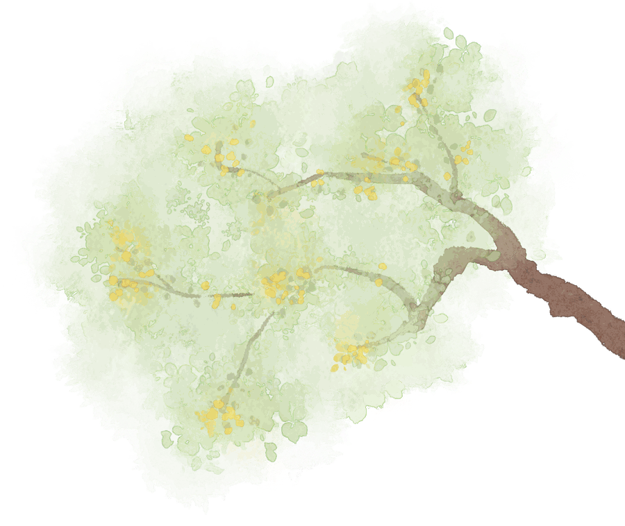
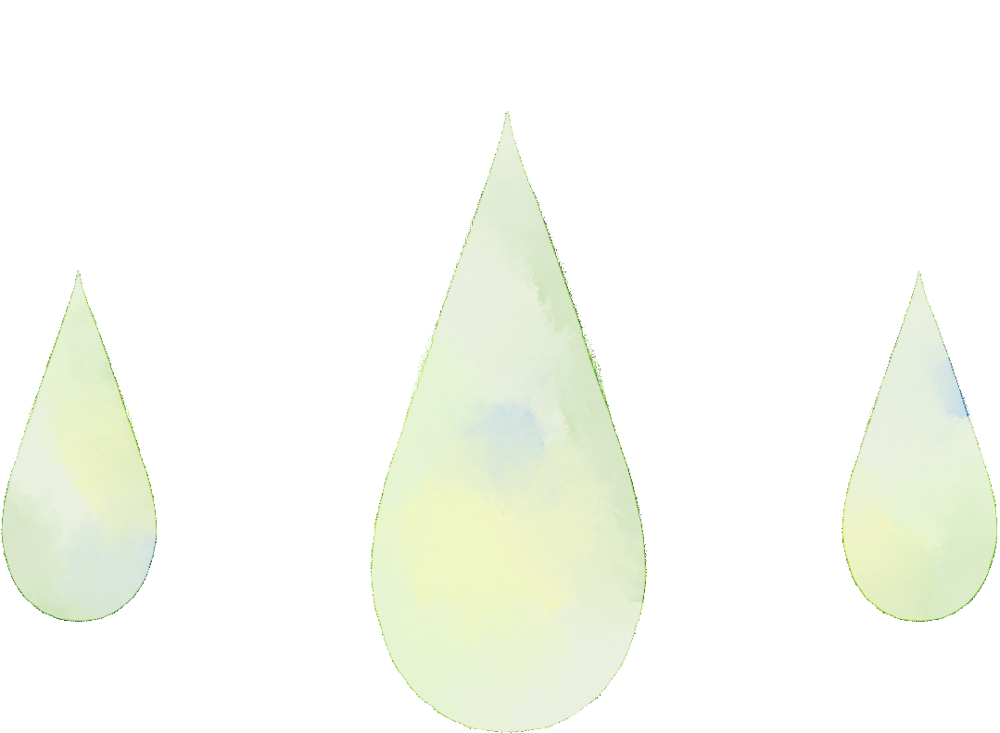

我行其野，芃芃其麦



在人生若干旅途中，在人世间若干面庞间，幸而与行者相遇，结伴同游这一方天地，去见一见那些经过时间蕴藏的古迹和文化。

站在这副展开的国画长卷前，一碧湖水串起整座城的名园胜迹，在五亭桥上看湖上凫庄的亭台廊阁，环于水而又凫于水，在细雨氤氲中别有一番景致。
“扬州繁华以盐盛”。从隋炀帝开凿大运河起始，扬州作为大运河的发祥地，成为历史上“陆上丝绸之路”与“海上丝绸之路”的交汇，成就过“富甲天下”的盛世繁华。正是这份繁华，造就了弥足珍贵的建筑、艺术、文学、饮食等文化遗产，并至今深远地影响着后世。
宫墙无言高耸，默立于墨，却从每一周正和方寸之间流露出厚重的气息。从路两旁的照壁和牌坊，到仪门和内里的寅宾馆、衙神庙，每处书画都暗含深意，“为政不在言多，须息息从省身克己而出，当官务持大体，思事事皆民生国计所关”这些为官从政，立身处世的道理在当今时代，依旧是警世之言。
行至山丹，陇右风华尽收眼底，明长城，汉长城蜿蜒并行，大大小小的石窟坐落在戈壁大漠，驼铃梵音渺渺于耳，记录着友谊长存的故事。艾黎捐赠文物博物馆中的4000件文物，件件都在诉说着历史中的真切情感。

于高山之巅，方见大河奔涌于群峰之上，更觉长风浩荡。行至漫漫旷野，方觉芃芃其麦皆有其意。

来源 | 行者无疆实践团
文字 | 邢璐娅
排版 | 夏骏
审核 | 温兆琪 朱华玮